ラーメンの汁に、打ちたてのそば。
そば・うどん・ラーメン、いずれの麺も店の奥で粉から打っております。名物のそばラーメンは900円。昼だけの三時間半、麺が無くなるまでお出ししております。
麺が無くなり次第、その日は終いとさせていただきます
麺の残り・お席の空き具合は、お電話でお確かめください。
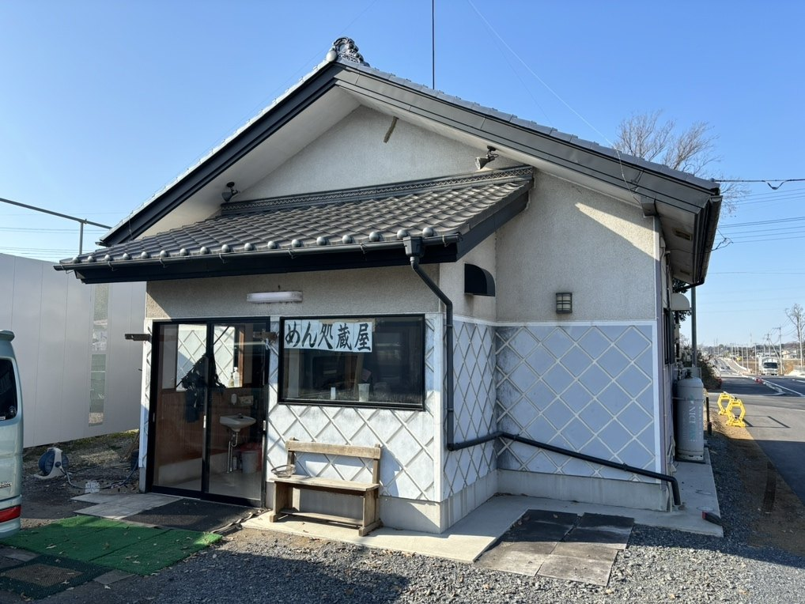
増量材も、防腐剤も、
一切使っておりません。
そばとうどんには、増量材も防腐剤も使っておりません。おつゆもかつお節だけで、昔ながらのやり方でこしらえております。
お子さまにも安心してお召し上がりいただけるものを、と思ってやってまいりました。店内にも同じことを書いて掲げております。
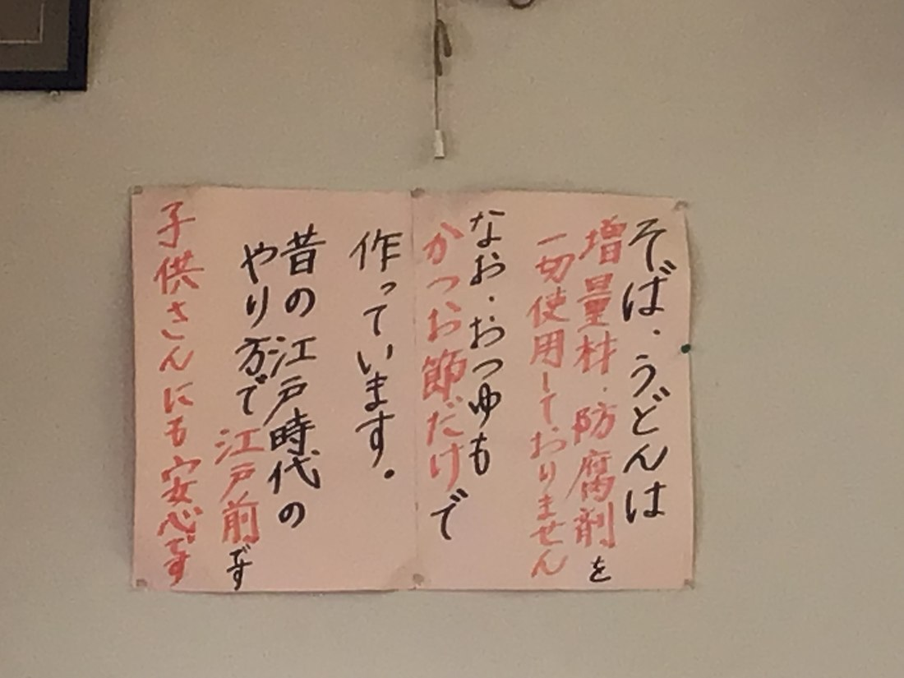
900円
ラーメンのおつゆに、店で打ったそばを入れた一杯でございます。麺は中華麺ではなく、そのままのそば。
太さの揃わない手打ちのそばが、和風のおつゆをよく持ち上げます。当店のお品書きにも「是非一度どうぞ」と添えております。
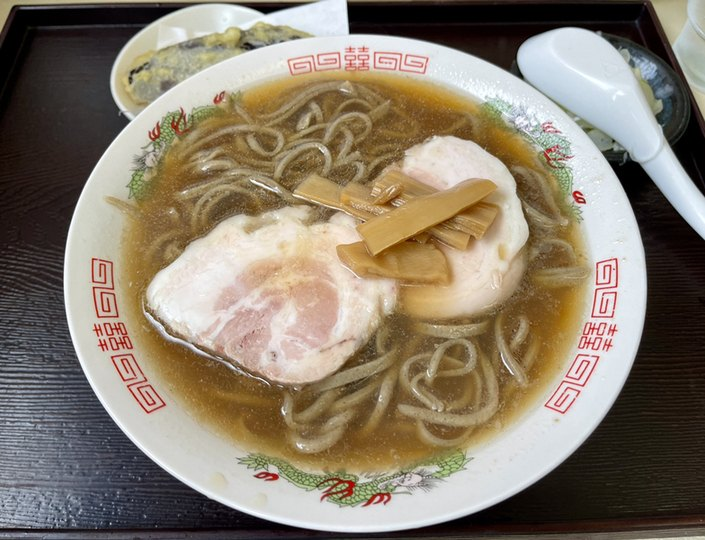
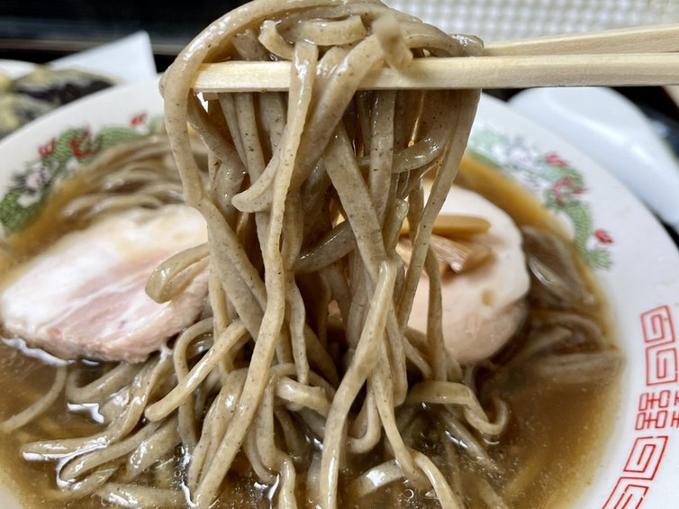
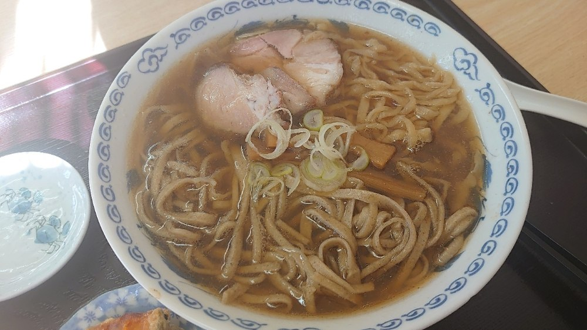
そば・うどん・ラーメン、いずれの麺も店の製麺室で打っております。そばは二八、粉からその都度こしらえて、ご注文をいただいてから茹でてお出しします。
そのぶんお時間をいただきます。打ちたてをお召し上がりいただきたく、どうぞお待ちくださいませ。製麺室は入口のそばにございます。
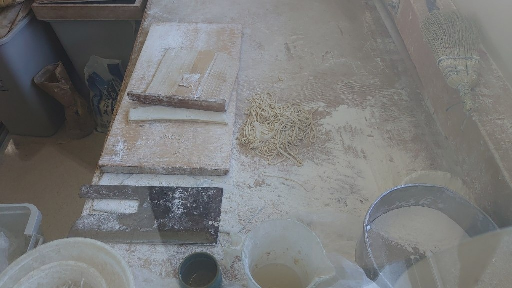
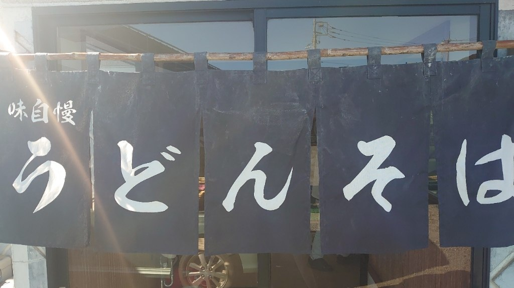
もりそばは850円、天ぷらそばは1,200円でございます。そばとうどんはどちらも同じお値段でお作りします。大盛りは150円増し、合盛りは950円で承ります。
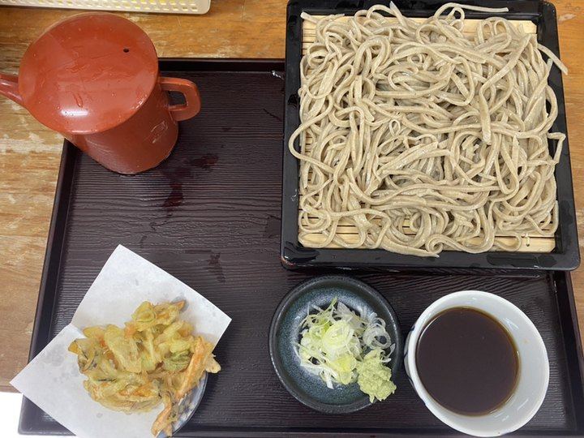
手打ちの和風ラーメンでございます。ラーメンは800円、チャーシューを重ねたチャーシューメンは1,000円で承ります。
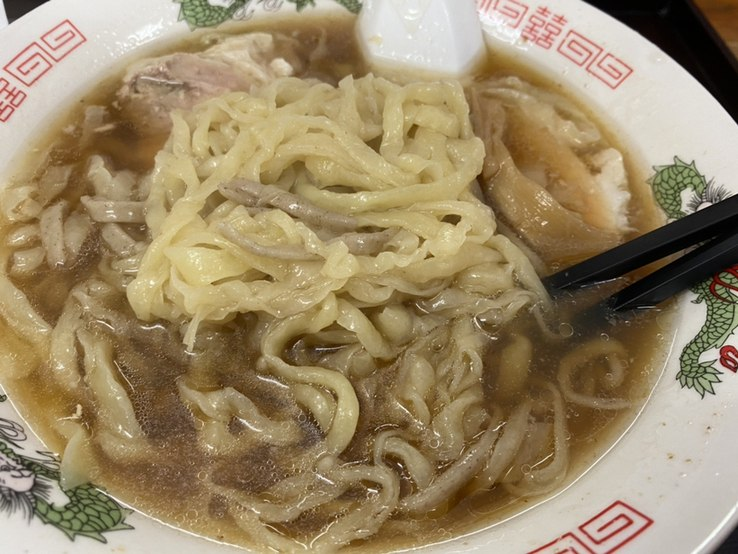
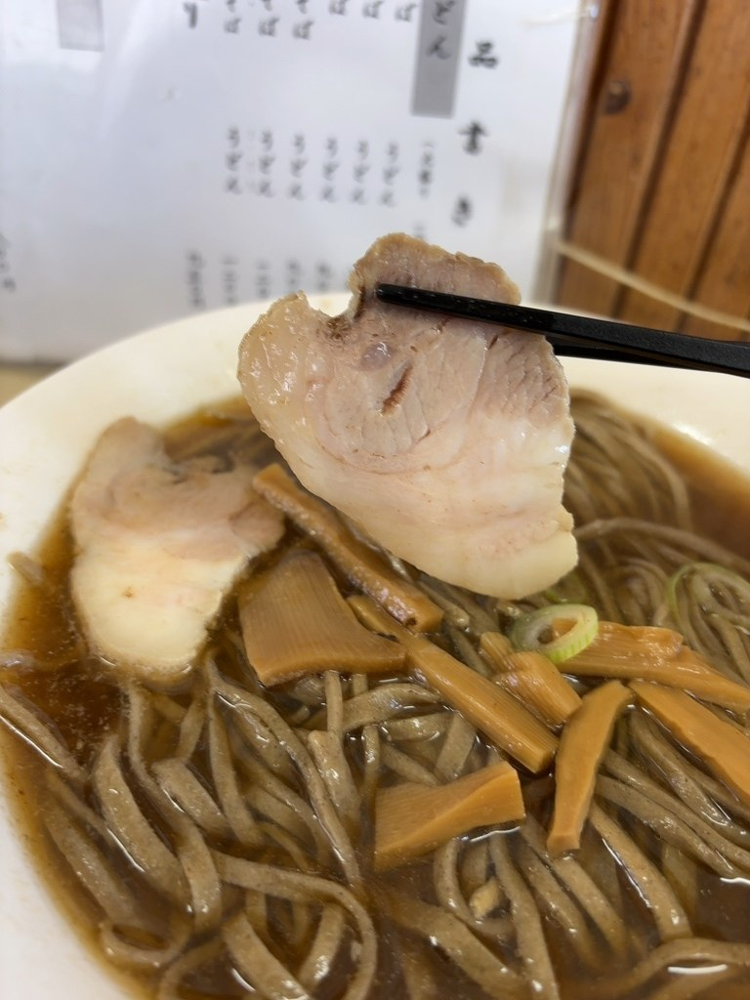
天ぷら盛合わせは一人前900円。ほかにもつ煮、つまみチャーシューを各500円でご用意しております。ビール大瓶と日本酒もございます。
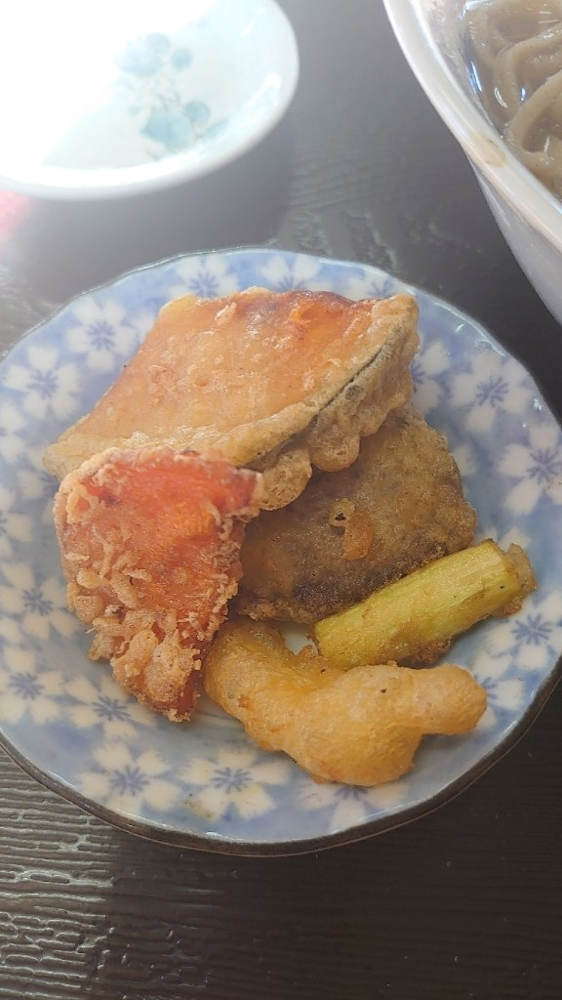
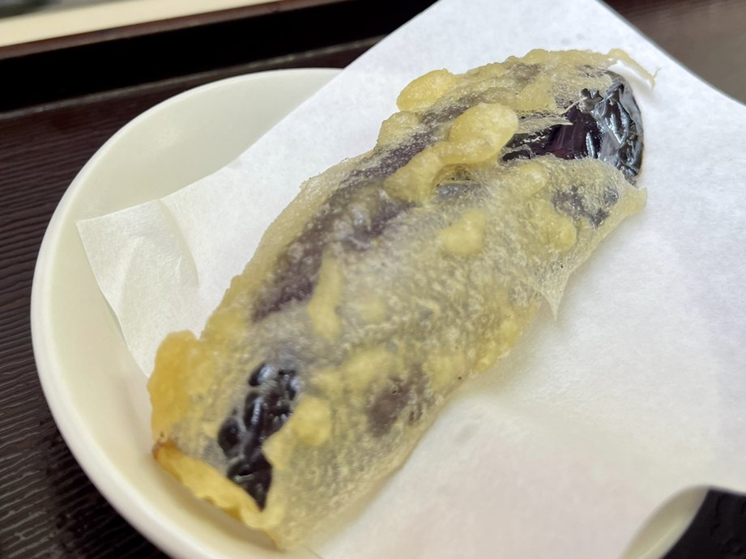
全部で20席、カウンターとテーブル、小上がりのお座敷をご用意しております。全席禁煙です。おひとりさまも、どうぞお気軽にお立ち寄りくださいませ。
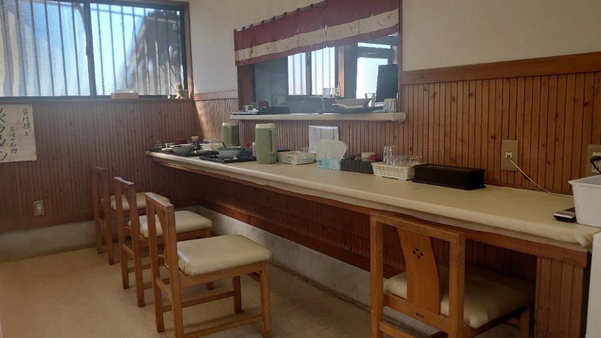
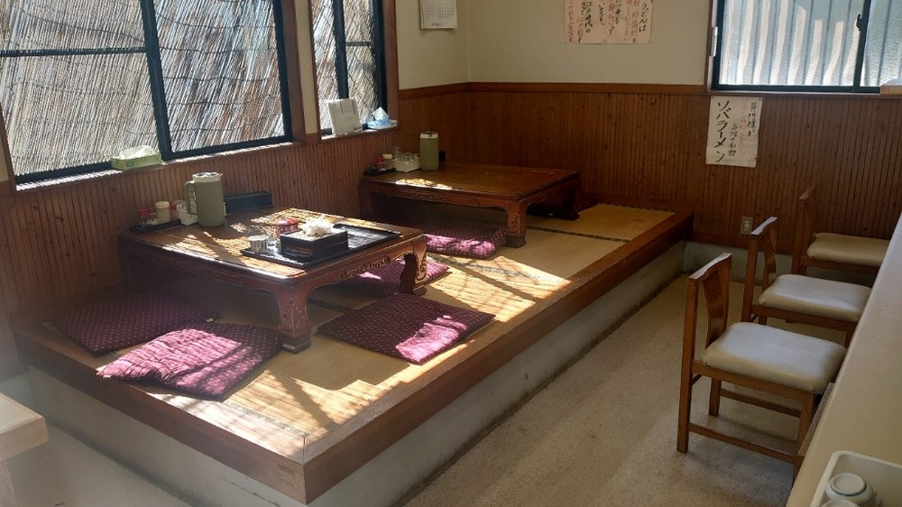
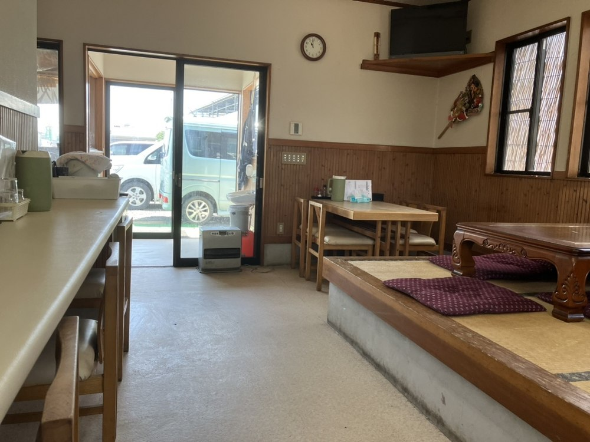
「安いです。しかしきちんと手打ちです。店主さん、かなり頑張っていらっしゃいます。とても心の温まるお蕎麦屋さんでした。」
お客様の声より
「そばラーメンがあると聞き来店、想像以上に美味しく、また食べたくなる味でした。一度食べてみる価値ありのラーメンです。」
お客様の声より
「そばラーメンなる物を頂きました。蕎麦好きには、たまらない一品でした。次回は、もりそばを食べたいです。」
お客様の声より
国道4号バイパス沿いでございます。小さな平屋ですので、走っていると通り過ぎてしまうことがあるかもしれません。
白い菱形の格子模様の壁と、紺の暖簾を目印になさってください。お車は店の前にお停めいただけます。
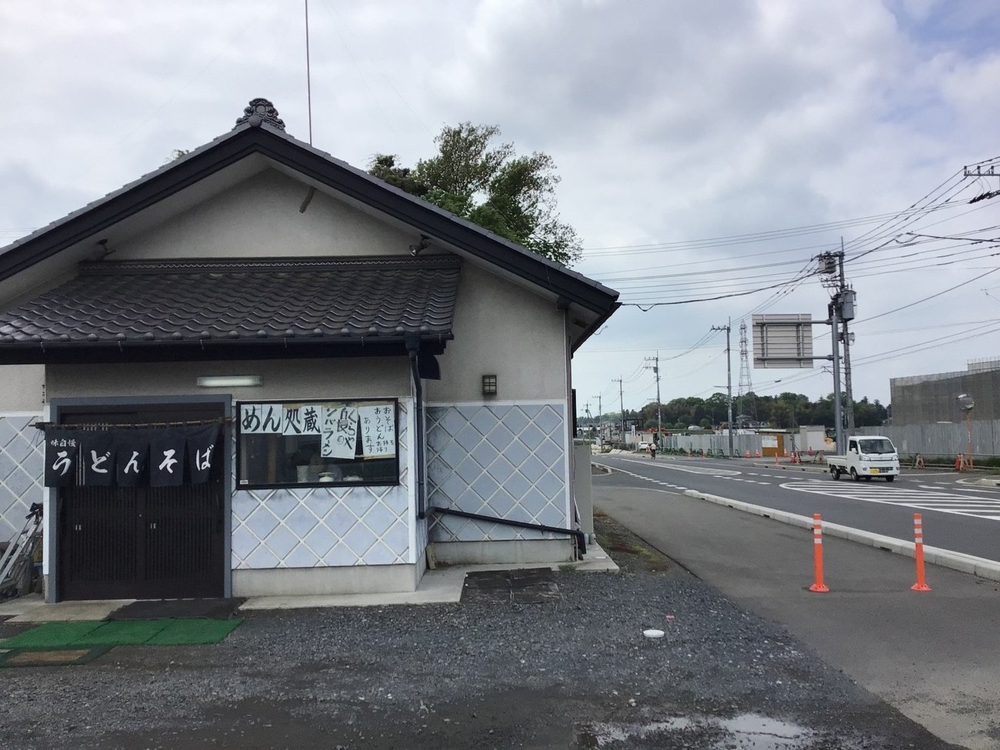
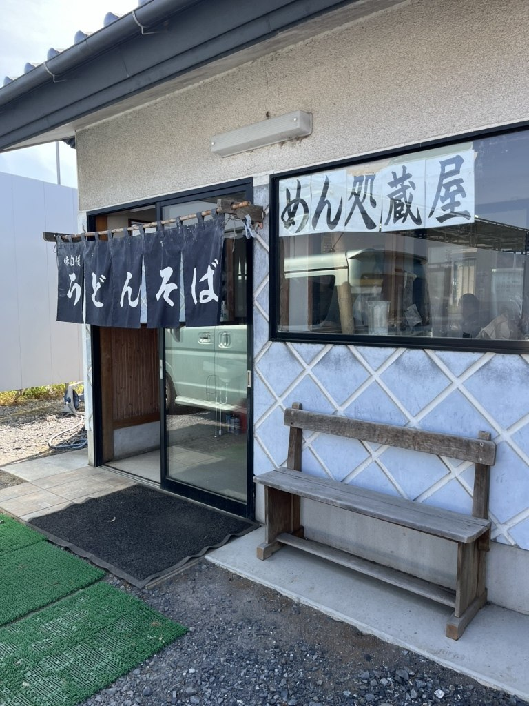
| 店名 | めん処 蔵屋（めんどころ くらや） |
|---|---|
| 住所 | 〒306-0203 茨城県古河市柳橋582-6 |
| 電話 | 0280-93-0059 |
| 営業時間 | 火曜日〜土曜日 11:00〜14:30 ※麺が無くなり次第、終いとさせていただきます |
| 定休日 | 日曜日・月曜日 |
| お席 | 20席（カウンター・テーブル・小上がりのお座敷）／全席禁煙 |
| 駐車場 | あり |
| お支払い | 現金のみ |
| ご予約 | 承っておりません。空いているお席へどうぞ |